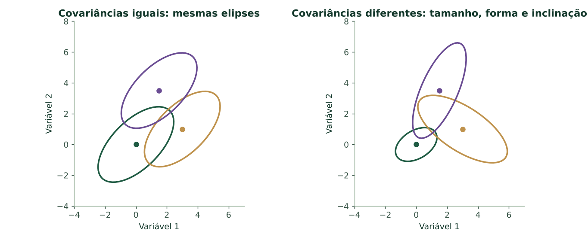
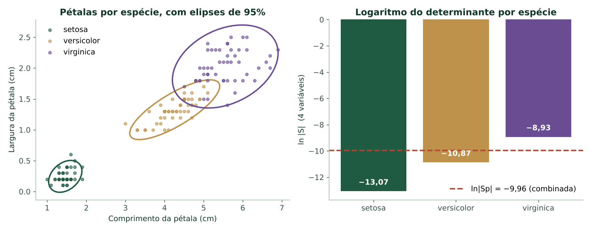

M de Box
Verifica se os grupos têm a mesma matriz de covariâncias, condição da MANOVA e da análise discriminante linear.
Comece por aqui
Os testes de Levene e Bartlett comparam uma variância entre grupos. Quando há várias variáveis resposta ao mesmo tempo, o que se compara é a matriz de covariâncias inteira: as variâncias de cada variável e as covariâncias entre elas. O teste M de Box faz essa comparação e é o diagnóstico tradicional antes da MANOVA e da análise discriminante linear.
O teste M de Box (1949) é a generalização multivariada do teste de Bartlett: com uma única variável, as duas estatísticas coincidem. Ele herda também o principal defeito do Bartlett, que é a forte sensibilidade à não normalidade.
O que é o teste
Cada grupo tem sua matriz de covariâncias \(\mathbf S_i\). O determinante \(|\mathbf S_i|\), chamado variância generalizada, resume em um número o “volume” da nuvem de pontos do grupo. Se todas as matrizes populacionais fossem iguais, o logaritmo do determinante da matriz combinada \(\mathbf S_p\) ficaria próximo da média ponderada dos logaritmos dos determinantes de cada grupo. A estatística \(M\) mede a distância entre essas duas quantidades.

Pressupostos e como verificá-los
| Pressuposto | Por que importa | Como verificar |
|---|---|---|
| Normalidade multivariada em cada grupo | O teste rejeita com facilidade quando há caudas pesadas ou assimetria, mesmo com covariâncias iguais. | Teste de Mardia por grupo e Q–Q das distâncias de Mahalanobis. |
| Observações independentes | Dependência invalida a distribuição de M. | Delineamento do estudo. |
| Mais observações que variáveis em cada grupo | Caso contrário, a matriz do grupo é singular e o determinante é zero. | table(grupo) e ncol(X). |
| Variáveis quantitativas sem redundância | Variáveis que são combinação linear de outras tornam a matriz singular. | det(cov(X)) diferente de zero. |
| Grupos não muito pequenos | A aproximação qui-quadrado piora com nᵢ < 20 ou muitas variáveis e grupos. | Para esses casos existe a aproximação F de Box. |
Hipóteses e estatística de teste
Em que:
- \(M\)
- estatística de Box
- \(g\)
- número de grupos
- \(p\)
- número de variáveis resposta
- \(n_i,\ N\)
- tamanho do grupo i e total de observações
- \(\mathbf S_i\)
- matriz de covariâncias amostral do grupo i
- \(\mathbf S_p\)
- matriz de covariâncias combinada (pooled)
- \(|\cdot|\)
- determinante da matriz (variância generalizada)
- \(c\)
- fator de correção que melhora a aproximação qui-quadrado
Exemplo numérico, passo a passo (2 grupos, 2 variáveis, n = 5 em cada)
Determinantes: \(|\mathbf S_1|=10\times8{,}5-8{,}5^2=12{,}75\); \(|\mathbf S_2|=434{,}69\); \(|\mathbf S_p|=209{,}11\).
\[\begin{aligned}M &= 8\ln209{,}11-4\ln12{,}75 \\ &\quad -4\ln434{,}69 \\ &= 42{,}743-10{,}182-24{,}298 \\ &= 8{,}262.\end{aligned}\]
\[\begin{aligned}c &= \dfrac{2(4)+3(2)-1}{6\times3\times1}\biggl[\dfrac14+\dfrac14 \\ &\quad -\dfrac18\biggr] \\ &= 0{,}7222\times0{,}375 = 0{,}2708.\end{aligned}\]
\(\chi^2=8{,}262\times(1-0{,}2708)=6{,}025\), com \(2\times3\times1/2=3\) g.l. ⇒ \(p=0{,}110\).
As matrizes parecem bem diferentes, mas com apenas 5 observações por grupo o teste não tem poder para detectar a diferença.
Propriedades e valor-p
- \(M\geq0\), e \(M=0\) apenas quando todas as matrizes amostrais são iguais.
- O valor-p é \(P(\chi^2_{gl}\geq\chi^2_{obs})\) (unilateral à direita).
- Com uma única variável (\(p=1\)), o teste se reduz ao de Bartlett.
- Com amostras grandes, detecta diferenças pequenas e irrelevantes; com dados não normais, rejeita mesmo quando as matrizes são iguais.
- Não há intervalo de confiança para \(M\). Para descrever a diferença, compare os \(\ln|\mathbf S_i|\), as variâncias e as correlações de cada grupo.
Como interpretar os resultados
| Resultado | Leitura | Conduta |
|---|---|---|
| p < 0,001 | Evidência de matrizes de covariâncias diferentes (ou de não normalidade). | Verifique a normalidade; na MANOVA, use o traço de Pillai; na classificação, considere QDA. |
| 0,001 ≤ p < 0,05 | Zona em que o teste costuma reagir a desvios sem importância prática. | Com grupos de tamanhos semelhantes, a MANOVA é robusta; inspecione as matrizes. |
| p ≥ 0,05 | Sem evidência suficiente de diferença. | Não prova igualdade, sobretudo com n pequeno. |
Pela sensibilidade excessiva do teste, é comum adotar um nível de significância mais rigoroso (0,001) para o M de Box (TABACHNICK; FIDELL, 2019). Com grupos de tamanhos iguais, a MANOVA tolera bem diferenças moderadas entre as matrizes.
Como executar no R e em Python
Onde executar o código em Python
Não é preciso instalar nada: o Google Colab é um computador na nuvem, gratuito, que executa Python pelo navegador e já traz as bibliotecas usadas aqui (numpy, scipy e matplotlib).
boxM() pertence ao pacote biotools. Instale uma única vez com install.packages("biotools") e carregue com library(biotools). O primeiro argumento é a tabela com as variáveis quantitativas; o segundo, o fator que define os grupos. O pacote heplots oferece uma função de mesmo nome.
# install.packages("biotools")
library(biotools)
boxM(iris[, 1:4], iris$Species)
Exemplo de aplicação
Contexto dos dados
O conjunto iris (ANDERSON, 1935; FISHER, 1936) traz quatro medidas, em centímetros, de 150 flores de três espécies: comprimento e largura da sépala e da pétala. Antes de uma MANOVA ou de uma análise discriminante linear, queremos saber se as três espécies têm a mesma matriz de covariâncias.
Código em R
# M de Box: exemplo completo ----
# Pacote: biotools. Instale uma única vez: install.packages("biotools")
library(biotools)
# 1. Dados: iris (150 flores, 3 espécies, 4 medidas em cm)
X <- iris[, 1:4]
grupo <- iris$Species
table(grupo)
# 2. Logaritmo do determinante da matriz de covariâncias de cada espécie
sapply(split(X, grupo), function(d) log(det(cov(d))))
# 3. Teste M de Box
boxM(X, grupo)
# 4. Cálculo manual da estatística
g <- nlevels(grupo); p <- ncol(X)
ni <- as.numeric(table(grupo)); N <- sum(ni)
Si <- lapply(split(X, grupo), cov)
Sp <- Reduce(`+`, Map(function(S, n) (n - 1) * S, Si, ni)) / (N - g) # covariância combinada
M <- (N - g) * log(det(Sp)) - sum((ni - 1) * sapply(Si, function(S) log(det(S))))
c1 <- (2 * p^2 + 3 * p - 1) / (6 * (p + 1) * (g - 1)) * (sum(1 / (ni - 1)) - 1 / (N - g))
X2 <- M * (1 - c1); gl <- p * (p + 1) * (g - 1) / 2
c(M = M, X2 = X2, gl = gl, valor_p = pchisq(X2, gl, lower.tail = FALSE))
# 5. Gráfico: dispersão das medidas da pétala por espécie
plot(iris$Petal.Length, iris$Petal.Width, col = grupo, pch = 19,
xlab = "Comprimento da pétala (cm)", ylab = "Largura da pétala (cm)")
legend("topleft", legend = levels(grupo), col = 1:3, pch = 19, bty = "n")
A mesma análise em Python, com os resultados
Cole o código em um notebook do Google Colab ↗ e execute com Shift+Enter. Os valores abaixo são a saída desse código.
# Bibliotecas: numpy, scipy e matplotlib (já instaladas no Google Colab)
import numpy as np
from scipy import stats
import matplotlib.pyplot as plt
from sklearn.datasets import load_iris
def box_m(grupos):
"""Teste M de Box: recebe uma lista de matrizes (n_i x p), uma por grupo."""
g = len(grupos); p = grupos[0].shape[1]
ni = np.array([len(x) for x in grupos]); N = ni.sum()
Si = [np.cov(x, rowvar=False) for x in grupos]
Sp = sum((n - 1) * S for n, S in zip(ni, Si)) / (N - g) # covariância combinada
M = (N - g) * np.log(np.linalg.det(Sp)) - sum((n - 1) * np.log(np.linalg.det(S)) for n, S in zip(ni, Si))
c = (2*p**2 + 3*p - 1) / (6 * (p + 1) * (g - 1)) * (np.sum(1 / (ni - 1)) - 1 / (N - g))
X2 = M * (1 - c); gl = p * (p + 1) * (g - 1) // 2
return M, c, X2, gl, stats.chi2.sf(X2, gl), Si, Sp
# 1. Dados: iris (150 flores, 3 espécies, 4 medidas em cm)
iris = load_iris()
X, y, nomes = iris.data, iris.target, iris.target_names
grupos = [X[y == j] for j in range(3)]
# 2. Determinantes das matrizes de covariâncias
M, c, X2, gl, valor_p, Si, Sp = box_m(grupos)
for nome, S in zip(nomes, Si):
print(f"{nome:<11} n = 50 | ln|S| = {np.log(np.linalg.det(S)):8.4f} | variâncias = {np.round(np.diag(S), 3)}")
print(f"combinada | ln|Sp| = {np.log(np.linalg.det(Sp)):7.4f}")
# 3. Teste M de Box
print(f"\nM = {M:.4f} | fator de correção (1 - c) = {1 - c:.5f}")
print(f"Qui-quadrado = {X2:.3f}, gl = {gl}, p-valor = {valor_p:.3e}")
# 4. Exemplo do texto: dois grupos, duas variáveis
A = np.array([[2, 3], [4, 5], [6, 4], [8, 8], [10, 10]], dtype=float)
B = np.array([[1, 9], [5, 2], [6, 12], [9, 3], [14, 9]], dtype=float)
M2, c2, X22, gl2, p2, S2, Sp2 = box_m([A, B])
print("\nExemplo pequeno:")
print("S1 =", np.round(S2[0], 2).tolist(), "| S2 =", np.round(S2[1], 2).tolist(), "| Sp =", np.round(Sp2, 3).tolist())
print(f"|S1| = {np.linalg.det(S2[0]):.3f}, |S2| = {np.linalg.det(S2[1]):.3f}, |Sp| = {np.linalg.det(Sp2):.3f}")
print(f"M = {M2:.4f}, c = {c2:.4f}, qui-quadrado = {X22:.4f}, gl = {gl2}, p-valor = {p2:.4f}")
# 5. Gráfico: dispersão de duas variáveis por espécie
for j, cor in zip(range(3), ["tab:green", "tab:orange", "tab:purple"]):
plt.scatter(X[y == j, 2], X[y == j, 3], color=cor, label=nomes[j], alpha=0.7)
plt.xlabel("Comprimento da pétala (cm)"); plt.ylabel("Largura da pétala (cm)"); plt.legend(); plt.show()
Resultados da execução
setosa n = 50 | ln|S| = -13.0674 | variâncias = [0.124 0.144 0.03 0.011] versicolor n = 50 | ln|S| = -10.8743 | variâncias = [0.266 0.098 0.221 0.039] virginica n = 50 | ln|S| = -8.9271 | variâncias = [0.404 0.104 0.305 0.075] combinada | ln|Sp| = -9.9585 M = 146.6632 | fator de correção (1 - c) = 0.96100 Qui-quadrado = 140.943, gl = 20, p-valor = 3.352e-20 Exemplo pequeno: S1 = [[10.0, 8.5], [8.5, 8.5]] | S2 = [[23.5, -0.25], [-0.25, 18.5]] | Sp = [[16.75, 4.125], [4.125, 13.5]] |S1| = 12.750, |S2| = 434.688, |Sp| = 209.109 M = 8.2622, c = 0.2708, qui-quadrado = 6.0245, gl = 3, p-valor = 0.1104

| Elemento | Valor |
|---|---|
| ln|S| setosa / versicolor / virginica | −13,07 / −10,87 / −8,93 |
| ln|Sp| (combinada) | −9,96 |
| M | 146,66 |
| Fator de correção (1 − c) | 0,961 |
| Qui-quadrado | 140,94 com 20 g.l. |
| Valor-p | 3,4 × 10⁻²⁰ |
Leitura: a hipótese de matrizes de covariâncias iguais é rejeitada com folga, mesmo ao nível de 0,001. A diferença é visível: a setosa varia muito menos que as outras espécies em todas as medidas da pétala. Consequências práticas: na MANOVA, prefira o traço de Pillai; na classificação, a análise discriminante quadrática, que estima uma matriz por grupo, é mais coerente com os dados do que a linear.
Erros comuns
| Erro | Como evitar |
|---|---|
| Usar α = 0,05 de forma automática | Adote 0,001 e examine o tamanho das diferenças. |
| Ignorar a normalidade multivariada | Rejeição pode refletir caudas pesadas, não covariâncias diferentes. |
| Abandonar a MANOVA diante de qualquer rejeição | Com grupos balanceados, use o traço de Pillai. |
| Aplicar com grupos menores que o número de variáveis | A matriz fica singular; reduza variáveis ou aumente a amostra. |
| Confundir com teste de médias | O M de Box não diz nada sobre os centros dos grupos. |
Alternativas e fluxo de trabalho
| Procedimento | Quando preferir |
|---|---|
| MANOVA com traço de Pillai | Covariâncias diferentes e grupos de tamanhos semelhantes. |
| QDA | Classificação quando as covariâncias diferem. |
| Levene–Brown–Forsythe variável a variável | Diagnóstico robusto, embora ignore as covariâncias. |
| Testes por permutação ou bootstrap | Dados não normais. |
| Bartlett | Uma única variável resposta. |
- Avalie a normalidade multivariada em cada grupo.
- Compare variâncias, correlações e determinantes entre os grupos.
- Aplique o M de Box com α = 0,001.
- Se rejeitar, escolha procedimentos que não dependam de covariâncias iguais.
Referências desta ficha
- BOX, George E. P. A general distribution theory for a class of likelihood criteria. Biometrika, v. 36, n. 3-4, p. 317-346, 1949.
- TABACHNICK, Barbara G.; FIDELL, Linda S. Using multivariate statistics. 7. ed. Boston: Pearson, 2019.
- JOHNSON, Richard A.; WICHERN, Dean W. Applied multivariate statistical analysis. 6. ed. Upper Saddle River: Pearson Prentice Hall, 2007.
- SILVA, Anderson Rodrigo da. biotools: tools for biometry and applied statistics in agricultural science. R package. Disponível em: https://CRAN.R-project.org/package=biotools.
- FISHER, Ronald A. The use of multiple measurements in taxonomic problems. Annals of Eugenics, v. 7, n. 2, p. 179-188, 1936. (Conjunto de dados
iris, pacotedatasetsdo R.) - ANDERSON, Edgar. The irises of the Gaspé Peninsula. Bulletin of the American Iris Society, v. 59, p. 2-5, 1935.
- PEDREGOSA, Fabian et al. Scikit-learn: machine learning in Python. Journal of Machine Learning Research, v. 12, p. 2825-2830, 2011. (Função
sklearn.datasets.load_iris.) - R CORE TEAM. R: a language and environment for statistical computing. Vienna: R Foundation for Statistical Computing, 2026. Disponível em: https://www.r-project.org/.
- POSIT TEAM. RStudio: integrated development environment for R. Boston: Posit Software, PBC. Disponível em: https://posit.co/download/rstudio-desktop/.
- VIRTANEN, Pauli et al. SciPy 1.0: fundamental algorithms for scientific computing in Python. Nature Methods, v. 17, p. 261-272, 2020. DOI: 10.1038/s41592-019-0686-2. (Funções do módulo
scipy.stats.) - HARRIS, Charles R. et al. Array programming with NumPy. Nature, v. 585, p. 357-362, 2020. DOI: 10.1038/s41586-020-2649-2.
- HUNTER, John D. Matplotlib: a 2D graphics environment. Computing in Science & Engineering, v. 9, n. 3, p. 90-95, 2007.
- GOOGLE. Google Colaboratory. Disponível em: https://colab.research.google.com/.
- As figuras desta ficha foram elaboradas pelo autor.

Prof. Dr. Cássius Henrique Xavier Oliveira
Professor · ICTIN/UFLA · Estatística, Confiabilidade e Ciência de Dados.
Conheça minha trajetória e projetos →